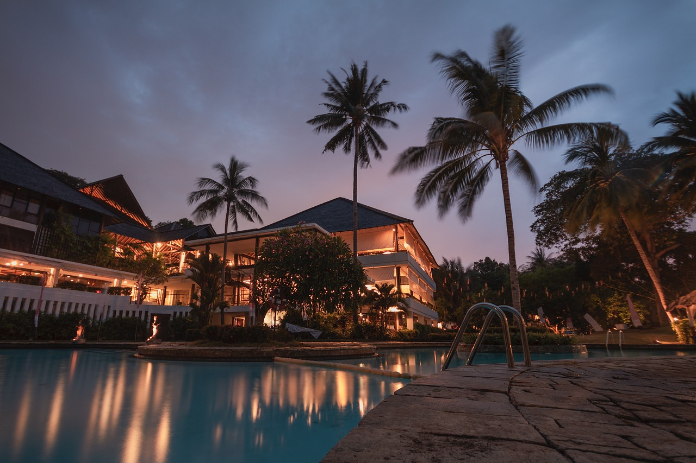
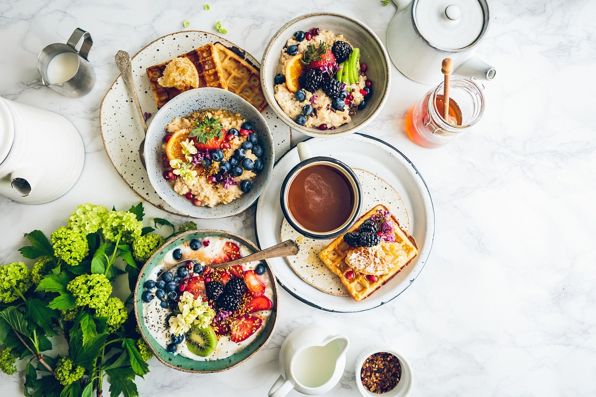
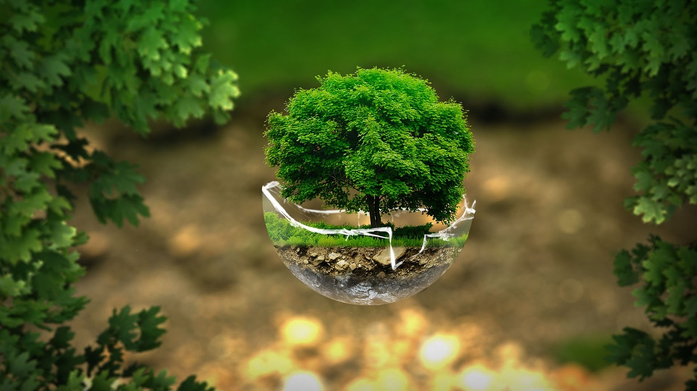
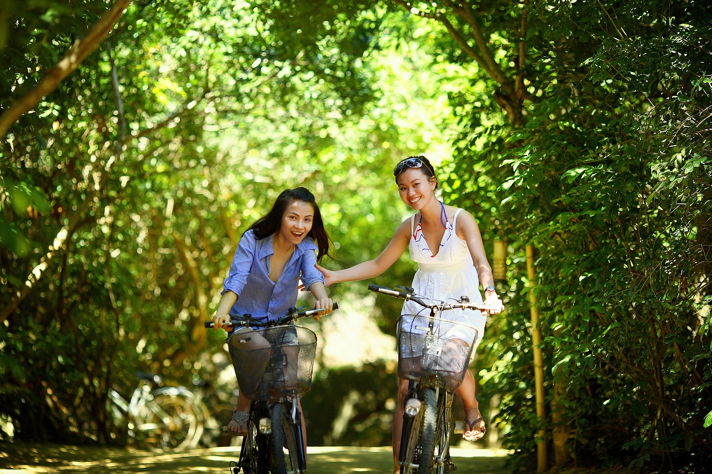
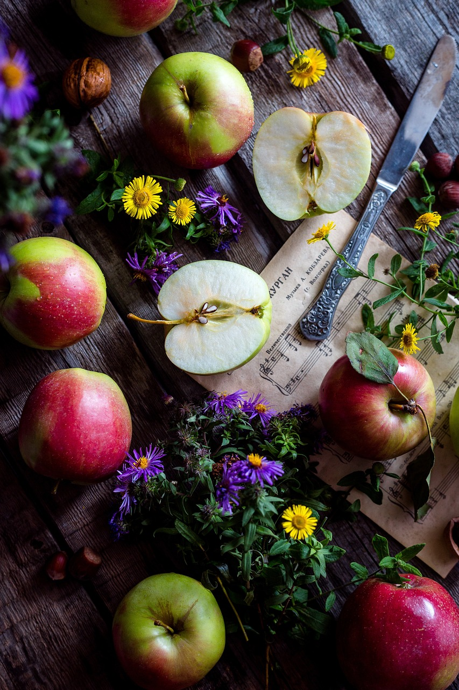

Quem está à frente de um alojamento sustentável coloca paixão em tudo o que faz e tudo o que ele concebe é para o conforto e bem-estar dos seus hóspedes. Um quarto decorado com materiais naturais, um pequeno almoço com produtos da região e a promoção da cultura local são apenas alguns dos exemplos de uma recepção única e especial.
Neste tipo de hotéis, os pequenos-almoços e refeições são preparados preferencialmente com alimentos locais e biológicos. Isto significa que os produtos são da área onde o alojamento se insere, frescos e sazonais, contribuindo para que a sua pegada carbónica seja reduzida.
Muitos dos alojamentos “eco-friendly” produzem a energia para o seu próprio consumo, como por exemplo a energia solar ou hídrica que servem para a produção de eletricidade. Isso não significa que possa desperdiçá-la porque muitas vezes não é suficiente para cobrir toda a procura. Por isso, se não está a usar toda a energia, poupe, pois a mesma pode ser usada pelo seu vizinho de quarto.
Um eco-hotel normalmente é bem servido por transportes públicos ou outros tipos de transporte coletivo, à excepção daqueles que ficam em zonas mais remotas do país. Muitos destes alojamentos disponibilizam bicicletas aos seus clientes ou encontram-se numa área onde podem facilmente deslocar-se a caminhar.
A reciclagem e a redução de desperdício fazem também parte dos objetivos de um alojamento “green”. O exemplo, como sempre, deve vir de cima, é por isso que a gestão do alojamento preocupa-se não só com a separação dos resíduos como também com o evitar dos desperdícios. Exemplo disso são as bebidas servidas em embalagens de vidro reciclável ou o uso de amenities em tamanho familiar.
